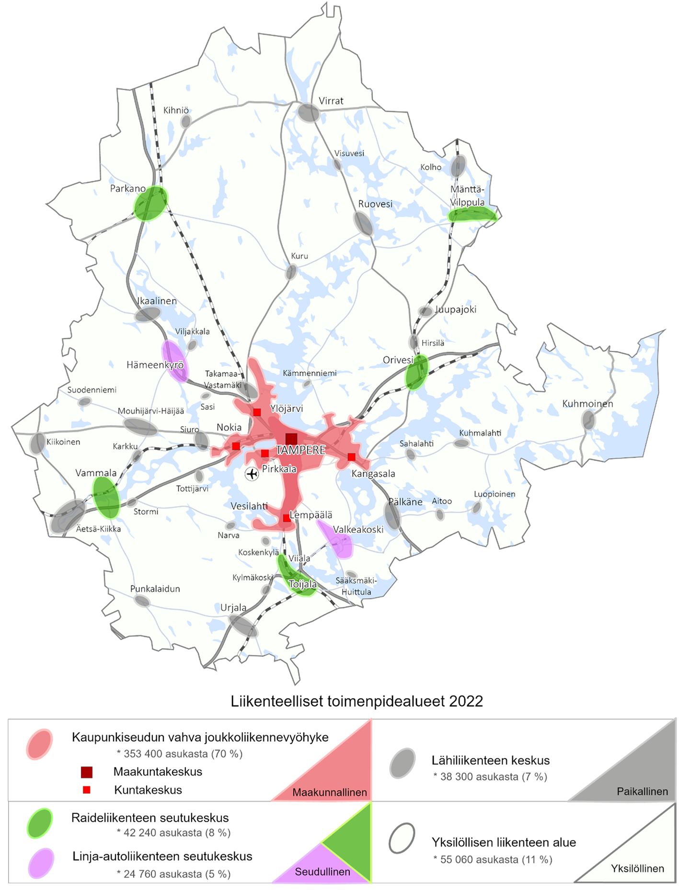

Arjen Pirkanmaa on paikkatietoanalyysiin ja asiantuntijanäkemyksiin pohjautuva aluetyypittely eli typologia Pirkanmaan erilaisista liikenneympäristöistä. Typologiassa Pirkanmaa on liikenneympäristön alueellisten ominaisuuksien mukaan jaoteltu neljään toimenpidealueeseen: yksilöllisen liikenteen alue, lähiliikenteen keskukset, raide- tai linja-autoliikenteeseen tukeutuvat seutukeskukset sekä Tampereen kaupunkiseudun joukkoliikennevyöhyke.
